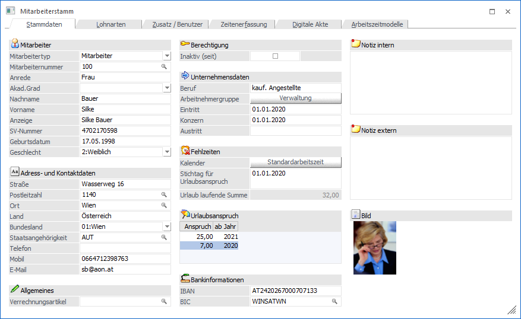
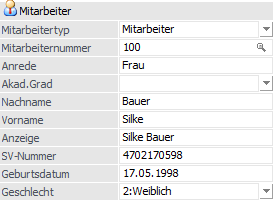
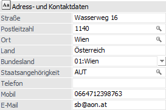
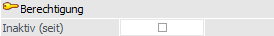
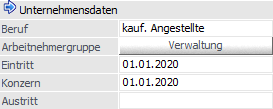
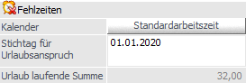
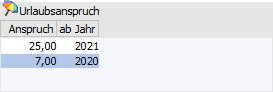
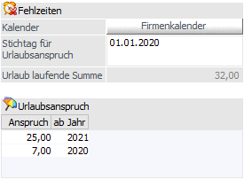
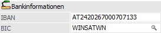
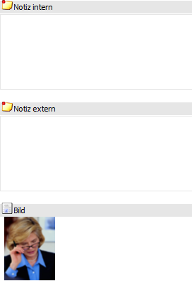

Im Register "Stammdaten" werden alle persönlichen Daten des Mitarbeiters; Bewerber bzw. Arbeitnehmers erfasst bzw. angezeigt.

Folgende Eingabefelder, Einstellungen und Informationen stehen zur Verfügung:
Mitarbeiter

Ø Mitarbeitertyp
Auswahl des Mitarbeitertyps, dabei stehen folgende Auswahlmöglichkeiten zur Verfügung:
ü Mitarbeiter
ü Bewerber
ü Arbeitnehmer
Hinweis
Mitarbeiter und Bewerber können in diesem Menüpunkt angelegt und verwaltet werden. Arbeitnehmer können nur aufgerufen werden (sofern der Mandant ein lohnführender Mandant ist).
Ø Mitarbeiternummer
Die Mitarbeiternummer ist 20stellig, alphanumerisch. Über den Matchcode kann nach der Mitarbeiternummer bzw. nach einem Namen oder Suchbegriff gesucht werden.
Ø Anrede
Wenn ein neuer Mitarbeiter angelegt wird, wird in diesem Feld der Text "NEUEINGABE - F9 für Übernahme" angezeigt. Wird die F9-Taste gedrückt, können die Daten von einem bestehenden Mitarbeiter übernommen werden. Diese Funktionalität ist aber nur bei einer Neuanlage eines Mitarbeiters gegeben. Anhand der Anrede (Herr oder Hr. bzw. Frau oder Fr. - es ist darauf zu achten, dass die richtige Schreibweise - wie angeführt - verwendet wird.) wird auch gleich das Feld "Geschlecht" automatisch vorbesetzt.
Ø Akad.Grad
Aus der Auswahllistbox kann der akademische Grad des Mitarbeiters gewählt werden, der vor dem Namen geführt wird.
Ø Nachname
An dieser Stelle wird der Nachname des Mitarbeiters bzw. Bewerbers hinterlegt.
Ø Vorname
Hier wird der Vorname Nachname des Mitarbeiters bzw. Bewerbers hinterlegt.
Ø Anzeige
Dieses Feld wird bei der Erstanlage einen Mitarbeiter aus den Inhalten der Felder "Akad.Grad", "Vorname" und "Nachname" zusammengesetzt. Dies ist aber nur ein Vorschlag und das Feld kann jederzeit editiert werden.
Ø SV-Nummer
Eingabe der SV-Nummer für den Mitarbeiter. Wenn die SV-Nummer bestätigt wird, wird sie nach österreichischem Muster geprüft. Ist die SV-Nummer nicht korrekt wird eine entsprechende Meldung ausgegeben. Wenn der Mitarbeiterstamm "international" verwendet wird, sollte das Feld nicht befüllt werden.
Ø Geburtsdatum
Hier wird das Geburtsdatum des Mitarbeiters eingetragen, wobei das Datum anhand der zuvor eingetragenen SV-Nummer vorgeschlagen wird.
Ø Geschlecht
Aus der Auswahllistbox kann das Geschlecht des Mitarbeiters ausgewählt werden. Wurde im Feld Anrede die Bezeichnung Herr, Hr. bzw. Frau oder Fr. eingegeben, wird das Geschlecht vom Programm automatisch vorbesetzt.
Adress- und Kontaktdaten

Die Hinterlegung der folgenden Daten ist optional, wobei "Bundesland" und "Staatsangehörigkeit" automatisch vorbelegt werden.
Ø Straße
An dieser Stelle wird die Straße des Mitarbeiters bzw. Bewerbers hinterlegt.
Ø PLZ
In dieses Feld kann die Postleitzahl der Mitarbeiter- bzw. Bewerberadresse hinterlegt werden. Durch Drücken der Taste F9 kann nach allen bereits angelegten Postleitzahlen gesucht werden. Wird die entsprechende Postleitzahl gefunden, so wird auch der "Ort" und das "Land" automatisch übernommen und muss nicht extra eingegeben werden.
Ø Ort
An dieser Stelle wird der Ort hinterlegt. Auch hier kann durch Drücken der Taste F9 nach allen bereits angelegten Orten mit deren Postleitzahlen gesucht werden, wobei durch Auswahl die Felder "Postleitzahl", "Ort" und "Land" gefüllt werden.
Ø Land
In diesem Feld wird das Land hinterlegt.
Ø Bundesland
Hier wird das Bundesland hinterlegt.
Ø Staatsangehörigkeit
An dieser Stelle muss die Staatsangehörigkeit des Mitarbeiters bzw. Bewerbers hinterlegt werden.
Ø Telefon / Mobil
In dieser Felder können die Telefon- bzw. Mobiltelefonnummer des Mitarbeiters bzw. Bewerbers hinterlegt werden.
Ø E-Mail
An dieser Stelle kann die Mail-Adresse angegeben werden.
Allgemeines
Ø Verrechnungsartikel
Der hier hinterlegte Artikel wird automatisch in der Projekterfassung (Register "Arbeitnehmer") bzw. Projektzeiterfassung der WinLine FAKT verwendet, wenn für den Mitarbeiter eine Erfassung erfolgt.
Berechtigung

Ø Inaktiv (seit)
Durch Aktivieren der Checkbox wird der Mitarbeiter bzw. der Bewerber auf "inaktiv" gesetzt. Dadurch wird auch die Information "seit" ausgefüllt und zwar mit jenem Datum, an dem der Mitarbeiter bzw. Bewerber auf "inaktiv" gesetzt wurde.
Unternehmensdaten

Ø Beruf
In diesem Feld kann der Beruf, den der Mitarbeiter im Betrieb ausführt, hinterlegt werden. Diese Information hat reinen Informationscharakter.
Ø Arbeitnehmergruppe
Durch Anklicken des Buttons kann dem Mitarbeiter eine Arbeitnehmergruppe hinterlegt werden. Ist bereits eine Arbeitnehmergruppe hinterlegt, wird die Bezeichnung der Gruppe am Button angezeigt. Die Arbeitnehmergruppen können über den Menüpunkt SMART/Stammdaten/Arbeitnehmergruppen angelegt werden.
Ø Eintritt
Hier wird Eintrittsdatum des Mitarbeiters eingetragen. Durch Drücken der F3-Taste wird das aktuelle Datum übernommen, durch Drücken der F9-Taste wird der Kalender geöffnet, von dem ein Datum übernommen werden kann.
Ø Konzern
In diesem Feld wird die Konzernzugehörigkeit (erstes Eintrittsdatum) hinterlegt.
Ø Austritt
In diesem Feld wird das Austrittsdatum eingetragen.
Fehlzeiten

Ø Kalender
Über das Feld Kalender kann die Schicht ausgewählt werden, in der der Mitarbeiter standardmäßig arbeitet. Damit kann gesteuert werden, welche Arbeitszeiten der Mitarbeiter hat.
Hinweis
Wenn ein Kalender hinterlegt ist, wird bei einem Update auf die Version 11 der Kalender als Basis für das Arbeitszeitmodell verwendet.
Ø Stichtag für Urlaubsanspruch
Hier wird der Stichtag für die Urlaubsberechnung hinterlegt.
Ø Urlaub laufende Summe
Hier wird die Summe der verbliebenen Urlaubstage angezeigt, die sich aus dem Urlaubsanspruch abzüglich der verbrauchten Urlaubstage (lt. Fehlzeitenverwaltung) ergeben. Bei der Berechnung der laufenden Summe wird auch der Stichtag für neuen Urlaubsanspruch berücksichtigt.
Hinweis
Handelt es sich um einen Mandanten mit LOHN AT, so wird als Berechnungsgrundlage die aktuelle Abrechnungsperiode herangezogen. Wird hingegen mit einem nicht lohnführenden Mandanten gearbeitet (siehe "WinLine START - Applikationsparameter - LOHN-Parameter - Nicht Lohnführende Mandanten") so wird das Einlogdatum hierfür genutzt.
Urlaubsanspruch

Ø Urlaubsanspruch
Hier wird der aktuelle Urlaubsanspruch des AN/MA hinterlegt, wobei der Anspruch in einer Tabelle verwaltet werden kann. In dieser Tabelle können folgende Informationen eingegeben werden:
ü Anspruch
Anzahl der
Urlaubstage, auf die der AN/MA Anspruch hat.
ü ab Jahr
Hinterlegung des
Jahres, ab dem der Anspruch gültig ist.
Im Normalfall werden in dieser Tabelle immer nur ein bis zwei Einträge vorhanden sein. Diese Liste wird erst dann erweitert, wenn der AN/MA z.B. aufgrund seiner Firmenzugehörigkeit Anspruch auf mehr Urlaub erhält. Bei der Neuanlage eines AN/MA wird der Anspruch von 25 Tagen mit dem aktuellen Wirtschaftsjahr automatisch vorgeschlagen.
Wenn die Urlaubsberechnung neu gestartet wird, kann der Resturlaub aus einem Vorjahr auch entsprechend verwaltet werden. Dazu muss der Urlaubsstichtag in das Vorjahr verlegt werden, der Resturlaub wird dann auch entsprechend mit dem Vorjahr eingetragen.
Beispiel
Die Urlaubsverwaltung soll mit 1. Januar 2021 begonnen werden. Der AN/MA ist aber schon länger in der Firma beschäftigt und hat daher noch einen Resturlaub aus 2020 von 7 Tagen. Basis für die Berechnung des Urlaubs in dem Beispiel ist das Kalenderjahr.
Lösung

Als Stichtag für den Urlaubsanspruch wird der 1.1.2020 eingetragen. Für das Jahr 2020 werden demnach in der Tabelle für den Urlaubsanspruch 7 Resturlaubstage hinterlegt, dazu kommen ab dem Jahr 2021 jeweils 25 Tage hinzu. Da ergibt für das Jahr 2021 einen Urlaubsanspruch von 32 Tagen.
Bankinformationen

Ø IBAN
30stellig, alphanumerisch. Die IBAN (International Bank Account Number) ist eine international genormte Darstellung der Kontoverbindung und setzt sich aus dem Länder-Code, den Prüfziffern, der Bankleitzahl und der Kontonummer zusammen. Diese einheitliche Kontonummernsystematik auf europäischer Ebene ermöglicht eine kostengünstige, vollautomatische und maschinelle Verarbeitung von Zahlungen. Wird eine IBAN eingetragen, wird diese auf ihre Richtigkeit geprüft. Wird eine Eingabe oder Bearbeitung dieses Wertes vorgenommen, so wird zur Vereinfachung die IBAN in 4er-Blöcken dargestellt. Sobald der Fokus auf ein anderes Feld gesetzt wird, wird die ursprüngliche Formatierung zurückgesetzt.
Ø BIC
11stellig, alphanumerisch. Der BIC (Business Identifier Code) ist der eindeutige Code einer Bank und kann über den Bankleitzahlenstamm eingepflegt werden.
Info

Ø Notiz intern
In diesem Feld kann eine beliebig lange Notiz zu diesem Mitarbeiter bzw. Bewerber erfasst werden.
Ø Notiz extern
In diesem Feld kann eine beliebig lange Notiz zu diesem Mitarbeiter bzw. Bewerber erfasst werden.
Ø Bild
An dieser Stelle wird das Bild des Mitarbeiters bzw. Bewerbers dargestellt. Ein neues Bild kann durch Anwahl des aktuellen Bilds zugewiesen werden.